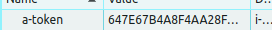
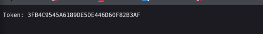
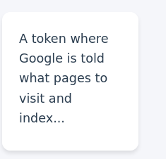
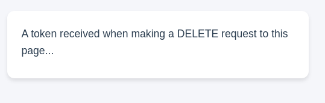
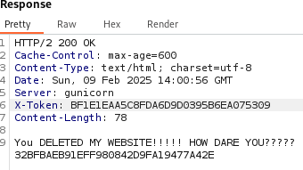
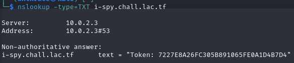

Challenge Description Link to heading
In this challenge, there is a form where we must submit tokens. The description and hints indicate that multiple tokens are hidden in different parts of the web application. The objective is to find and submit all the tokens to obtain the flag.
Step 1: Understand Where to Look for Tokens Link to heading
Tokens are scattered across several common locations where hidden data may reside:
- HTML
- Console (JavaScript logs)
- CSS
- JavaScript (external file)
- HTTP Headers
- Cookies
- robots.txt
- sitemap.xml
- Specific HTTP requests
- Server-accessible files
Step 2: Finding the Tokens One by One Link to heading
First Token - In the Form Link to heading
The first token is directly given in the form:
B218B51749AB9E4C669E4B33122C8AE3
Second Token - Hidden in HTML Comments Link to heading
By inspecting the page source with Ctrl + U or using the Elements tab in browser DevTools, we find a comment:
<!-- Token: 66E7AEBA46293C88D484CDAB0E479268 -->
Third Token - Console.log Link to heading
In the Console tab of DevTools (F12 → Console), a log reveals another token:
5D1F98BCEE51588F6A7500C4DAEF8AD6
Fourth Token - CSS File Link to heading
In Sources → CSS files, inside styles.css, another token is hidden:
29D3065EFED4A6F82F2116DA1784C265
Fifth Token - JavaScript File Link to heading
In the main.js file (via Sources), we find another token:
9D34859CA6FC9BB8A57DB4F444CDAE83
Sixth Token - HTTP Headers Link to heading
Using the Network tab in DevTools and reloading the page, one of the HTTP request headers contains a token:

BF1E1EAA5C8FDA6D9D0395B6EA075309
Seventh Token - Cookie Link to heading

In Application → Cookies, another token is stored:

647E67B4A8F4AA28FAB602151F1707F2
Eighth Token - robots.txt Link to heading

The robots.txt file is usually accessible at https://site.com/robots.txt.
Inside it, we find another token:

3FB4C9545A6189DE5DE446D60F82B3AF
Ninth Token - sitemap.xml Link to heading

Following the hint, we checked sitemap.xml (https://site.com/sitemap.xml) and found another token:

F1C20B637F1B78A1858A3E62B66C3799
Tenth Token - Deleting an Element Link to heading

Inside the web interface, a delete action seems to reveal a token. After trying a DELETE, we received:

32BFBAEB91EFF980842D9FA19477A42E
Eleventh Token - NSLOOKUP Link to heading

We used nslookup on the target domain and found a text file containing the final token:

Step 3: Submitting the Tokens Link to heading
After gathering all the tokens, we submitted them in the form, which gave us the final flag.
Final Flag Link to heading